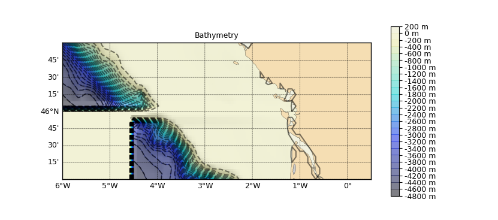

1.3.4.2.2.2. Fusion de bathymétries grillées¶
Voir : GriddedBathy GriddedMerger add_grid()

Bathmétrie grillée issue de la fusion de deux autres bathymétries à résolutions et emprises différentes.
# -*- coding: utf8 -*-
import pylab as P
# Création de bathymétries fictives à partir de Smith and Sandwell
import cdms2
from vacumm.config import data_sample
cdms2.axis.longitude_aliases.append('x')
cdms2.axis.latitude_aliases.append('y')
f = cdms2.open(data_sample('ETOPO2v2g_flt.grd'))
# - large
var_large = f('z', lon=(-7, -1), lat=(46, 49))
# - petite
var_small = f('z', lon=(-4.5, -.5), lat=(44.5, 46.5))
f.close()
# - regrillage de la large vers une grille moins fine
from vacumm.misc.grid import regridding, resol, create_grid
xr, yr = resol(var_large.getGrid())
grid_large = create_grid((-7., -1, xr*4.5), (46., 49, yr*4.5))
var_large = regridding.regrid2d(var_large, grid_large)
# On ajoute un traît de côte pour le masquage
from vacumm.bathy.bathy import GriddedBathy, GriddedBathyMerger
bathy_large = GriddedBathy(var_large, shoreline='i')
bathy_small = var_small
# Création de la grille finale de résolution intermédiaire
final_grid = create_grid((-6., .5, xr*2.5), (45, 47., yr*2.5))
# On crée maintenant le merger
merger = GriddedBathyMerger(final_grid)
# - ajout de la bathy basse resolution en premier (en dessous)
merger += bathy_large
# - puis ajout de celle haute résolution
merger += bathy_small
# On définit le traît de côte pour le masquage
merger.set_shoreline('h')
# Fusion vers la grille finale
bathy = merger.merge()
# Plot
merger.plot(show=False)
from vacumm.misc.plot import savefigs, add_grid
kwgrid = dict(linewidth=.5, alpha=.5, samp=2)
add_grid(grid_large, color='r', **kwgrid)
add_grid(var_small.getGrid(), color='#00ff00', **kwgrid)
savefigs(__file__)
P.close()